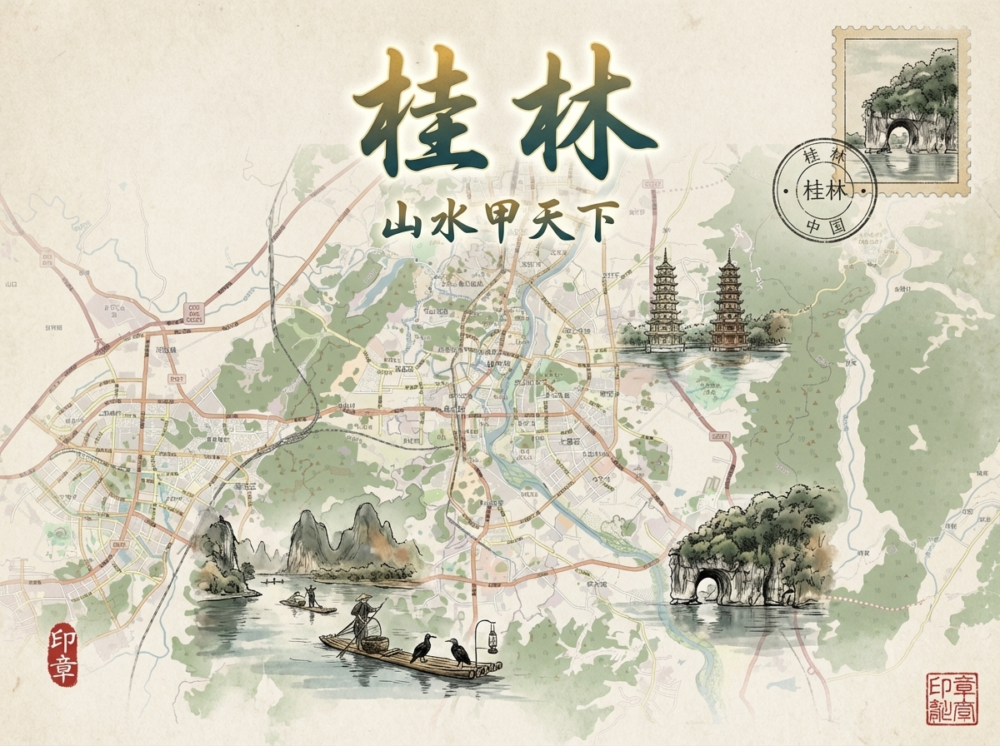
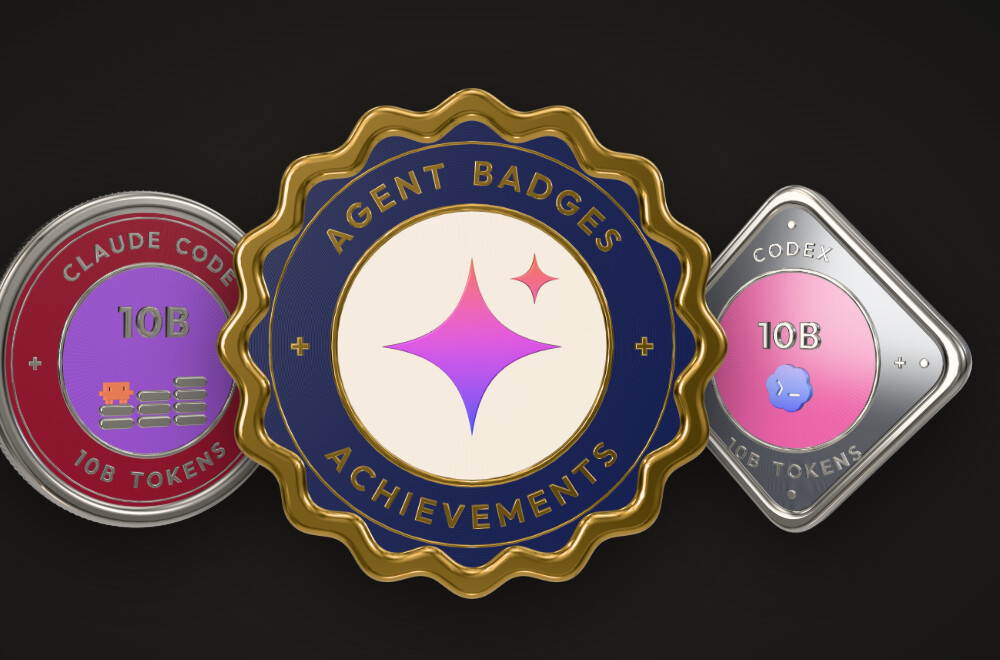
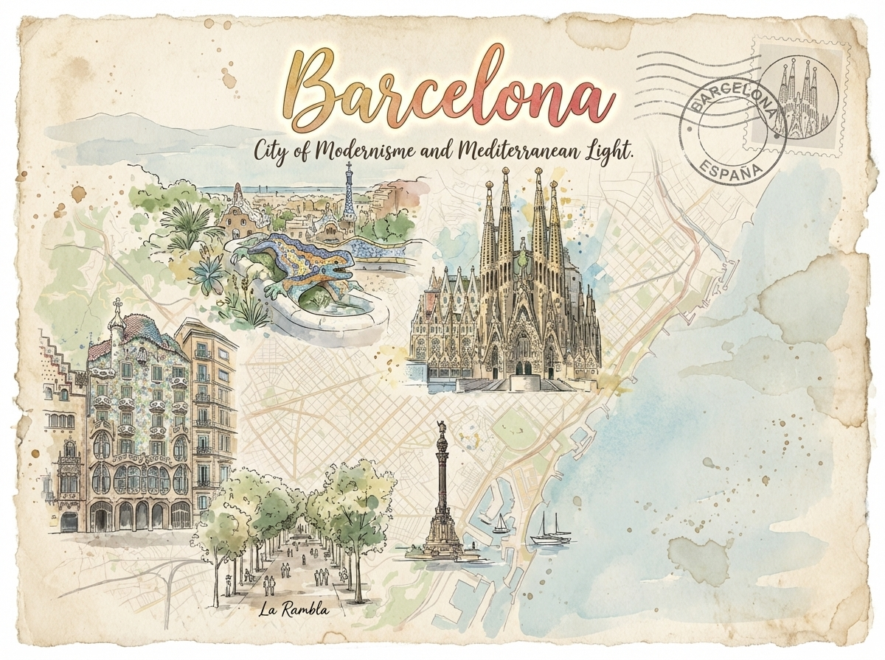
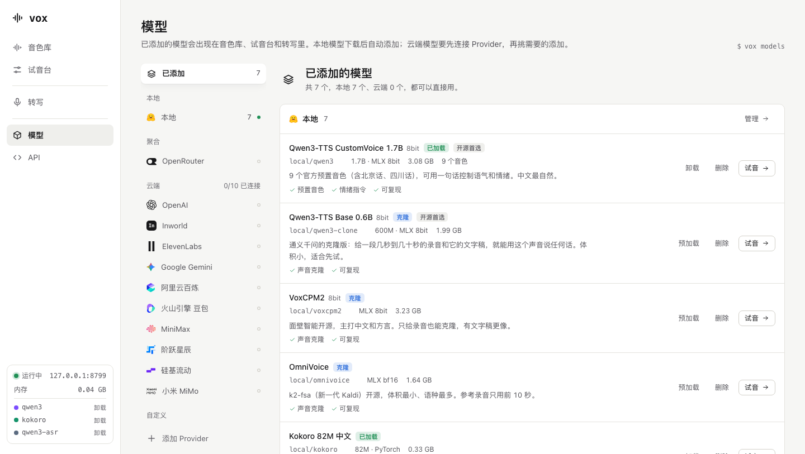
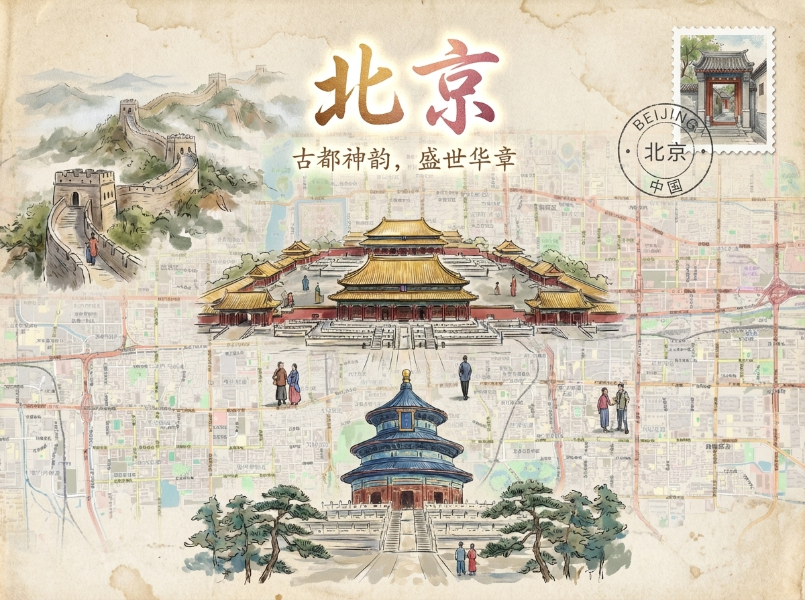

按你贴的方向：深色基底加一个强调色、衬线大标题、前中后三层景深。画面里用的都是你仓库里的真实素材（agent-badges 徽章、Maposter 明信片），并保留了上一轮 A 的核心：项目变成画面里的物件。鼠标在画面上移动会有景深视差，作品图和列表都可以悬停。

Things I make — and the reasons behind them.

把 Claude Code 和 Codex 的使用记录，铸成一枚枚 3D 成就徽章。

输入一个地名，AI 画一张城市明信片。

一个界面，调用所有语音合成模型。
做东西的过程中想明白的事。长短不限，想到就写。
像一帧电影剧照。深海蓝底，一束暖光打在 agent-badges 徽章上：前景是一块毛玻璃的 vox 播放卡片，背景是虚焦的桂林明信片，光里有浮尘慢慢上升，徽章表面会周期性扫过一道高光。标题在左下角逐行升起，往下是"精选作品"（大小不一的电影画幅）和"文字"（衬线标题列表）。强调色是黄铜。

LUCAS · 王立奇 · 中 / EN
像一期杂志的封面。"Aryous"刊头横跨整个画面，北京和巴塞罗那两张明信片压在刊头上，徽章站在最前面，形成三层景深。左下是"本期"导读，右下是一句自我介绍，一枚朱红色圆标在慢慢旋转。往下是"目录"：悬停作品名时，作品图会跟着鼠标浮出来。强调色是朱红。